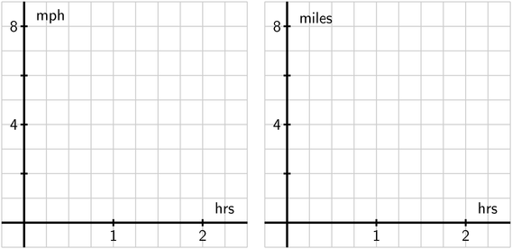
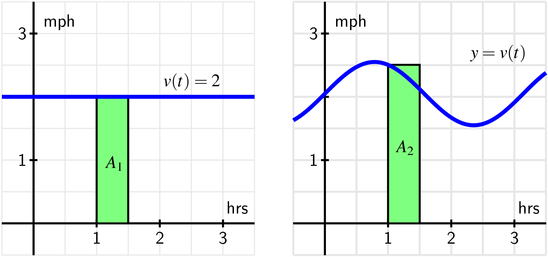
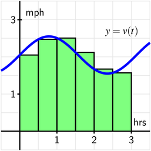
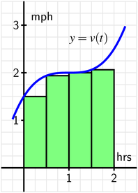
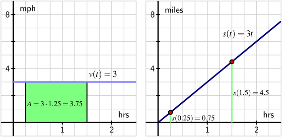
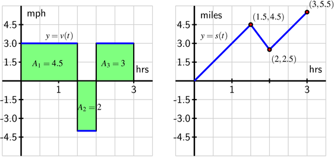
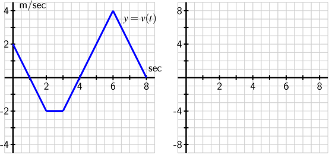
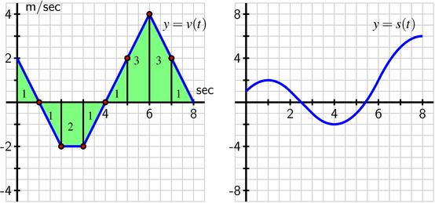
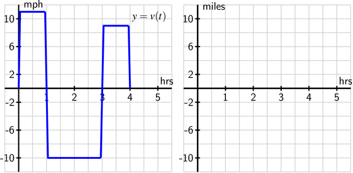
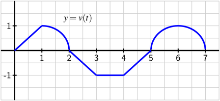

Section4.1Determining distance traveled from velocity¶ permalink
{In this section, we strive to understand the ideas generated by the following important questions:
If we know the velocity of a moving body at every point in a given interval, can we determine the distance the object has traveled on the time interval?
How is the problem of finding distance traveled related to finding the area under a certain curve?
What does it mean to antidifferentiate a function and why is this process relevant to finding distance traveled?
If velocity is negative, how does this impact the problem of finding distance traveled?
}
Subsection4.1.1Introduction
In the very first section of the text, we considered a situation where a moving object had a known position at time \(t\). In particular, we stipulated that a tennis ball tossed into the air had its height \(s\) (in feet) at time \(t\) (in seconds) given by \(s(t) = 64 - 16(t-1)^2\). From this starting point, we investigated the average velocity of the ball on a given interval \([a,b]\), computed by the difference quotient \(\frac{s(b)-s(a)}{b-a}\), and eventually found that we could determine the exact instantaneous velocity of the ball at time \(t\) by taking the derivative of the position function,
Thus, given a differentiable position function, we are able to know the exact velocity of the moving object at any point in time.
Moreover, from this foundational problem involving position and velocity we have learned a great deal. Given a differentiable function \(f\), we are now able to find its derivative and use this derivative to determine the function's instantaneous rate of change at any point in the domain, as well as to find where the function is increasing or decreasing, is concave up or concave down, and has relative extremes. The vast majority of the problems and applications we have considered have involved the situation where a particular function is known and we seek information that relies on knowing the function's instantaneous rate of change. That is, we have typically proceeded from a function \(f\) to its derivative, \(f'\), and then used the meaning of the derivative to help us answer important questions.
In a much smaller number of situations so far, we have encountered the reverse situation where we instead know the derivative, \(f'\), and have tried to deduce information about \(f\). It is this particular problem that will be the focus of our attention in most of Chapter 4: if we know the instantaneous rate of change of a function, are we able to determine the function itself? To begin, we start with a more focused question: if we know the instantaneous velocity of an object moving along a straight line path, can we determine its corresponding position function?
Preview Activity
Suppose that a person is taking a walk along a long straight path and walks at a constant rate of 3 miles per hour.
On the left-hand axes provided in Figure 4.1.1, sketch a labeled graph of the velocity function \(v(t) = 3\).
Figure4.1.1At left, axes for plotting \(y = v(t)\); at right, for plotting \(y = s(t)\).
Note that while the scale on the two sets of axes is the same, the units on the right-hand axes differ from those on the left. The right-hand axes will be used in question (d).
How far did the person travel during the two hours? How is this distance related to the area of a certain region under the graph of \(y = v(t)\)?
Find an algebraic formula, \(s(t)\), for the position of the person at time \(t\), assuming that \(s(0) = 0\). Explain your thinking.
On the right-hand axes provided in Figure 4.1.1, sketch a labeled graph of the position function \(y = s(t)\).
For what values of \(t\) is the position function \(s\) increasing? Explain why this is the case using relevant information about the velocity function \(v\).
Subsection4.1.2Area under the graph of the velocity function
In Preview Activity , we encountered a fundamental fact: when a moving object's velocity is constant (and positive), the area under the velocity curve over a given interval tells us the distance the object traveled.
Figure4.1.2At left, a constant velocity function; at right, a non-constant velocity function.
As seen at left in Figure 4.1.2, if we consider an object moving at 2 miles per hour over the time interval \([1,1.5]\), then the area \(A_1\) of the shaded region under \(y = v(t)\) on \([1,1.5]\) is
This principle holds in general simply due to the fact that distance equals rate times time, provided the rate is constant. Thus, if \(v(t)\) is constant on the interval \([a,b]\), then the distance traveled on \([a,b]\) is the area \(A\) that is given by
\[
A = v(a) (b-a) = v(a) \triangle t,
\]
where \(\triangle t\) is the change in \(t\) over the interval. Note, too, that we could use any value of \(v(t)\) on the interval \([a,b]\), since the velocity is constant; we simply chose \(v(a)\), the value at the interval's left endpoint. For several examples where the velocity function is piecewise constant, see \href{http://gvsu.edu/s/9T}{http://gvsu.edu/s/9T}. 1 Marc Renault, calculus applets.
The situation is obviously more complicated when the velocity function is not constant. At the same time, on relatively small intervals on which \(v(t)\) does not vary much, the area principle allows us to estimate the distance the moving object travels on that time interval. For instance, for the non-constant velocity function shown at right in Figure 4.1.2, we see that on the interval \([1,1.5]\), velocity varies from \(v(1) = 2.5\) down to \(v(1.5) \approx 2.1\). Hence, one estimate for distance traveled is the area of the pictured rectangle,
Because \(v\) is decreasing on \([1,1.5]\) and the rectangle lies above the curve, clearly \(A_2 = 1.25\) is an over-estimate of the actual distance traveled.
If we want to estimate the area under the non-constant velocity function on a wider interval, say \([0,3]\), it becomes apparent that one rectangle probably will not give a good approximation. Instead, we could use the six rectangles pictured in Figure 4.1.3,
Figure4.1.3Using six rectangles to estimate the area under \(y = v(t)\) on \([0,3]\).
find the area of each rectangle, and add up the total. Obviously there are choices to make and issues to understand: how many rectangles should we use? where should we evaluate the function to decide the rectangle's height? what happens if velocity is sometimes negative? can we attain the exact area under any non-constant curve? These questions and more are ones we will study in what follows; for now it suffices to realize that the simple idea of the area of a rectangle gives us a powerful tool for estimating both distance traveled from a velocity function as well as the area under an arbitrary curve. To explore the setting of multiple rectangles to approximate area under a non-constant velocity function, see the applet found at \href{http://gvsu.edu/s/9U}{http://gvsu.edu/s/9U}. 2 Marc Renault, calculus applets.
Suppose that a person is walking in such a way that her velocity varies slightly according to the information given in the table below and graph given in Figure 4.1.5.
Using the grid, graph, and given data appropriately, estimate the distance traveled by the walker during the two hour interval from \(t = 0\) to \(t = 2\). You should use time intervals of width \(\triangle t = 0.5\), choosing a way to use the function consistently to determine the height of each rectangle in order to approximate distance traveled.
How could you get a better approximation of the distance traveled on \([0,2]\)? Explain, and then find this new estimate.
Now suppose that you know that \(v\) is given by \(v(t) = 0.5t^3-1.5t^2+1.5t+1.5\). Remember that \(v\) is the derivative of the walker's position function, \(s\). Find a formula for \(s\) so that \(s' = v\).
Based on your work in (c), what is the value of \(s(2) - s(0)\)? What is the meaning of this quantity?
For instance, the approximate distance traveled on \([0,0.5]\) can be computed by \(v(0) \cdot 0.5 = 1.5 \cdot 0.5 = 0.75\) mile, while the approximate distance on \([0.5,1]\) can be computed by \(v(0.5) \cdot 0.5 = 1.9375 \cdot 0.5 = 0.9688\).
Think about the possibility of using a larger number of rectangles that are narrower in width.
If \(v(t) = t^3\) and we seek a function \(s\) such that \(s' = v\), note that one possible formula for \(s\) is \(s(t) = \frac{1}{4}t^4\).
Observe that this quantity is measuring a change in position. How is its value connected to other earlier work you've done?
Using rectangles of width \(\triangle t = 0.5\) and choosing to set the heights of the rectangles from the function value at the left end of the interval, we see the following graph and find the sum of the areas of the rectangles to be
\begin{align*}
A \amp = \amp v(0.0) \cdot 0.5 + v(0.5) \cdot 0.5 + v(1.0) \cdot 0.5 + v(1.5) \cdot 0.5\\
\amp = \amp 1.500 \cdot 0.5 + 1.9375 \cdot 0.5 + 2.000 \cdot 0.5 + 2.0625 \cdot 0.5\\
\amp = \amp 3.75
\end{align*}
Thus, the distance traveled is approximately \(D \approx 3.75\) miles.
It appears that a better approximation could be found using narrower rectangles. If we move to 8 rectangles of width \(0.25\), similar computations show that \(D \approx 3.875\).
By thinking about how the power rule for differentiation works, we can undo this rule and find a position function \(s\) whose derivative is \(v\). For instance, since \(\frac{d}{dt}[t^4] = 4t^3\), we see that \(\frac{d}{dt}[\frac{1}{8}t^4] = \frac{1}{2}t^3\). Thus, if we let
\[
s(t) = \frac{1}{8}t^4 - \frac{1}{2} t^3 + \frac{3}{4} t^2 + \frac{3}{2}t,
\]
then it is straightforward to check that \(s'(t) = \frac{1}{2}t^3 - \frac{3}{2}t^2 + \frac{3}{2}t + \frac{3}{2}\), which is precisely the formula for \(v(t)\) that we were given.
By the rule found in (c) for \(s\), we have that \(s(2) - s(0) = \frac{1}{8}2^4 - \frac{1}{2}2^3 + \frac{3}{4}2^2 + \frac{3}{2} 2 = 2 - 4 + 3 + 3 = 4\). This is the change in the walker's position over the time interval \([0,2]\), and since the velocity is always positive, this is actually the exact distance traveled. We see how both earlier estimates (\(3.75\) and \(3.785\)) are good approximations to this value.
Subsection4.1.3Two approaches: area and antidifferentiation
When the velocity of a moving object is positive, the object's position is always increasing. While we will soon consider situations where velocity is negative and think about the ramifications of this condition on distance traveled, for now we continue to assume that we are working with a positive velocity function. In that setting, we have established that whenever \(v\) is actually constant, the exact distance traveled on an interval is the area under the velocity curve; furthermore, we have observed that when \(v\) is not constant, we can estimate the total distance traveled by finding the areas of rectangles that help to approximate the area under the velocity curve on the given interval. Hence, we see the importance of the problem of finding the area between a curve and the horizontal axis: besides being an interesting geometric question, in the setting of the curve being the (positive) velocity of a moving object, the area under the curve over an interval tells us the exact distance traveled on the interval. We can estimate this area any time we have a graph of the velocity function or a table of data that tells us some relevant values of the function.
In Activity 4.1.4, we also encountered an alternate approach to finding the distance traveled. In particular, if we know a formula for the instantaneous velocity, \(y = v(t)\), of the moving body at time \(t\), then we realize that \(v\) must be the derivative of some corresponding position function \(s\). If we can find a formula for \(s\) from the formula for \(v\), it follows that we know the position of the object at time \(t\). In addition, under the assumption that velocity is positive, the change in position over a given interval then tells us the distance traveled on that interval.
For a simple example, consider the situation from Preview Activity , where a person is walking along a straight line and has velocity function \(v(t) = 3\) mph.
Figure4.1.6The velocity function \(v(t) = 3\) and corresponding position function \(s(t) = 3t\).
As pictured in Figure 4.1.6, we see the already noted relationship between area and distance traveled on the left-hand graph of the velocity function. In addition, because the velocity is constant at 3, we know that if 3 Here we are making the implicit assumption that \(s(0) = 0\); we will further discuss the different possibilities for values of \(s(0)\) in subsequent study. \(s(t) = 3t\), then \(s'(t) = 3\), so \(s(t) = 3t\) is a function whose derivative is \(v(t)\). Furthermore, we now observe that \(s(1.5) = 4.5\) and \(s(0.25) = 0.75\), which are the respective locations of the person at times \(t = 0.25\) and \(t = 1.5\), and therefore
This is not only the change in position on \([0.25,1.5]\), but also precisely the distance traveled on \([0.25,1.5]\), which can also be computed by finding the area under the velocity curve over the same interval. There are profound ideas and connections present in this example that we will spend much of the remainder of Chapter 4 studying and exploring.
For now, it is most important to observe that if we are given a formula for a velocity function \(v\), it can be very helpful to find a function \(s\) that satisfies \(s' = v\). In this context, we say that \(s\) is an antiderivative of \(v\). More generally, just as we say that \(f'\) is the derivative of \(f\) for a given function \(f\), if we are given a function \(g\) and \(G\) is a function such that \(G' = g\), we say that \(G\) is an antiderivative \knownindex{\lt main>antiderivative\lt /main>} of \(g\). For example, if \(g(x) = 3x^2 + 2x\), an antiderivative of \(g\) is \(G(x) = x^3 + x^2\), since \(G'(x) = g(x)\). Note that we say “an” antiderivative of \(g\) rather than “the” antiderivative of \(g\) because \(H(x) = x^3 + x^2 + 5\) is also a function whose derivative is \(g\), and thus \(H\) is another antiderivative of \(g\).
A ball is tossed vertically in such a way that its velocity function is given by \(v(t) = 32 - 32t\), where \(t\) is measured in seconds and \(v\) in feet per second. Assume that this function is valid for \(0 \le t \le 2\).
For what values of \(t\) is the velocity of the ball positive? What does this tell you about the motion of the ball on this interval of time values?
Find an antiderivative, \(s\), of \(v\) that satisfies \(s(0) = 0\).
Compute the value of \(s(1) - s(\frac{1}{2})\). What is the meaning of the value you find?
Using the graph of \(y = v(t)\) provided in Figure 4.1.8, find the exact area of the region under the velocity curve between \(t = \frac{1}{2}\) and \(t = 1\). What is the meaning of the value you find?
Answer the same questions as in (c) and (d) but instead using the interval \([0,1]\).
What is the value of \(s(2) - s(0)\)? What does this result tell you about the flight of the ball? How is this value connected to the provided graph of \(y = v(t)\)? Explain.
Where is velocity zero? Recall that positive velocity makes the position function increasing.
Since \(v\) is linear, note that \(s\) must be quadratic. What function has derivative \(32\)? What function has derivative \(32t\)?
Observe that you are taking the difference between two values of the position function.
The region whose area is sought is triangular. Simply use the known formula for the area of a triangle; do not use approximating rectangles.
See (c) and (d) above.
What does it mean for the change of the ball's position to be zero? How should we think of the area that lies beneath the \(t\)-axis on the interval \(1 \lt t \lt 2\)?
Note that \(v(1) = 0\) and for \(0 \lt t \lt 1\), \(v(t) > 0\). This means that on the interval \((0,1)\), the position function \(s\) is increasing because velocity is positive.
We can check that the derivative of \(s(t) = 32t - 16t^2\) is \(s'(t) = v(t) = 32 - 32t\), and that \(s(0) = 0\), so this is the antiderivative of \(v\) that we desire.
Now, \(s(1) - s(\frac{1}{2}) = (32 - 16) - (16 - 4) = 4\), which is the change in position of the ball on the interval \([\frac{1}{2},1]\). Equivalently, since \(v\) is positive through this interval, 4 feet is the vertical distance the ball traveled during this time.
On the interval from \(t = \frac{1}{2}\) to \(t = 1\), the corresponding area under the velocity curve is the area of the right triangular region whose width is \(\frac{1}{2}\) seconds and whose height is \(v(\frac{1}{2}) = 16\) feet/sec. That area is therefore \(A = \frac{1}{2} bh = \frac{1}{2} \cdot \frac{1}{2} \cdot 16 = 4\) feet. This is the total distance the ball traveled vertically on \([0,\frac{1}{2}]\).
\(s(1) - s(0) = (32 - 16) - (0-0) = 16\), which is the vertical distance the ball traveled on the interval \([0,1]\). The area under the velocity curve on \([0,1]\) is the area of the triangle with height 32 (ft/sec) and base 1 (second), which is \(A = \frac{1}{2} \cdot 1 \cdot 32 = 16\) feet. These two results are identical, in part due to the fact that we are using two different perspectives to compute the same quantity, which is distance traveled.
Observe that \(s(2) - s(0) = (32 - 32) - (0 - 0) = 0\). This means that the ball has zero change in position on the interval \([0,2]\). But we already established that on the interval \([0,1]\), the ball traveled 16 feet vertically; since the velocity becomes negative on the interval \(1 \lt t \lt 2\), there we know the ball's position is decreasing, so it is falling back to earth. The resulting zero change in position means that at \(t = 2\) the ball has returned to the location from which it was tossed. If we view the area between the velocity function and the \(t\)-axis as being negative wherever \(v\) is negative, then we see that the areas of the two triangles involved are opposites, which in some sense results in the “total area” being zero, matching the change in position.
Subsection4.1.4When velocity is negative
Most of our work in this section has occurred under the assumption that velocity is positive. This hypothesis guarantees that the movement of the object under consideration is always in a single direction, and hence ensures that the moving body's change in position is the same as the distance it travels on a given interval. As we saw in Activity 4.1.7, there are natural settings in which a moving object's velocity is negative; we would like to understand this scenario fully as well.
Consider a simple example where a person goes for a walk on a beach along a stretch of very straight shoreline that runs east-west. We can naturally assume that their initial position is \(s(0) = 0\), and further stipulate that their position function increases as they move east from their starting location. For instance, a position of \(s = 1\) mile represents being one mile east of the start location, while \(s = -1\) tells us the person is one mile west of where they began walking on the beach. Now suppose the person walks in the following manner. From the outset at \(t = 0\), the person walks due east at a constant rate of \(3\) mph for 1.5 hours. After 1.5 hours, the person stops abruptly and begins walking due west at the constant rate of \(4\) mph and does so for 0.5 hours. Then, after another abrupt stop and start, the person resumes walking at a constant rate of \(3\) mph to the east for one more hour. What is the total distance the person traveled on the time interval \(t = 0\) to \(t = 3\)? What is the person's total change in position over that time?
On one hand, these are elementary questions to answer because the velocity involved is constant on each interval. From \(t = 0\) to \(t = 1.5\), the person traveled
Since the velocity on \(1.5 \lt t \lt 2\) is actually \(v = -4\), being negative to indication motion in the westward direction, this tells us that the person first walked 4.5 miles east, then 2 miles west, followed by 3 more miles east. Thus, the walker's total change in position is
While we have been able to answer these questions fairly easily, it is also important to think about this problem graphically in order that we can generalize our solution to the more complicated setting when velocity is not constant, as well as to note the particular impact that negative velocity has.
Figure4.1.9At left, the velocity function of the person walking; at right, the corresponding position function.
In Figure 4.1.9, we see how the distances we computed above can be viewed as areas: \(A_1 = 4.5\) comes from taking rate times time (\(3 \cdot 1.5\)), as do \(A_2\) and \(A_3\) for the second and third rectangles. The big new issue is that while \(A_2\) is an area (and is therefore positive), because this area involves an interval on which the velocity function is negative, its area has a negative sign associated with it. This helps us to distinguish between distance traveled and change in position.
But the change in position has to account for the sign associated with the area, where those above the \(t\)-axis are considered positive while those below the \(t\)-axis are viewed as negative, so that
assigning the “\(-2\)” to the area in the interval \([1.5,2]\) because there velocity is negative and the person is walking in the “negative” direction. In other words, the person walks 4.5 miles in the positive direction, followed by two miles in the negative direction, and then 3 more miles in the positive direction. This affect of velocity being negative is also seen in the graph of the function \(y=s(t)\), which has a negative slope (specifically, its slope is \(-4\)) on the interval \(1.5\lt t\lt 2\) since the velocity is \(-4\) on that interval, which shows the person's position function is decreasing due to the fact that she is walking east, rather than west. On the intervals where she is walking west, the velocity function is positive and the slope of the position function \(s\) is therefore also positive.
To summarize, we see that if velocity is sometimes negative, this makes the moving object's change in position different from its distance traveled. By viewing the intervals on which velocity is positive and negative separately, we may compute the distance traveled on each such interval, and then depending on whether we desire total distance traveled or total change in position, we may account for negative velocities that account for negative change in position, while still contributing positively to total distance traveled. We close this section with one additional activity that further explores the effects of negative velocity on the problem of finding change in position and total distance traveled.
Suppose that an object moving along a straight line path has its velocity \(v\) (in meters per second) at time \(t\) (in seconds) given by the piecewise linear function whose graph is pictured in Figure 4.1.11. We view movement to the right as being in the positive direction (with positive velocity), while movement to the left is in the negative direction.
Figure4.1.11The velocity function of a moving object.
Suppose further that the object's initial position at time \(t = 0\) is \(s(0) = 1\).
Determine the total distance traveled and the total change in position on the time interval \(0 \le t \le 2\). What is the object's position at \(t = 2\)?
On what time intervals is the moving object's position function increasing? Why? On what intervals is the object's position decreasing? Why?
What is the object's position at \(t = 8\)? How many total meters has it traveled to get to this point (including distance in both directions)? Is this different from the object's total change in position on \(t = 0\) to \(t = 8\)?
Find the exact position of the object at \(t = 1, 2, 3, \ldots, 8\) and use this data to sketch an accurate graph of \(y = s(t)\) on the axes provided at right. How can you use the provided information about \(y = v(t)\) to determine the concavity of \(s\) on each relevant interval?
By finding the area of the triangular regions formed between \(y = v(t)\) and the \(t\)-axis on \([0,1]\) and \([1,2]\) (each of which is \(1\)), it follows that the object's total distance traveled is \(2\), while its change in position is \(0\). The latter is true since the net signed area bounded by \(v\) on \([0,2]\) is \(1 - 1 = 0\).
The object's position is increasing wherever its velocity is positive, hence for \(0 \le t \lt 1\) and \(4 \lt 5 \lt 8>\).
By calculating the area bounded by the curve, we find 1 unit of area on \([0,1]\), 4 units of area on \([1,4]\), and 8 units of area on \([4,8]\), thus the total distance traveled on \(0 \le t \le 8\) is \(D = 1 + 4 + 8\) meters. As the change in position is given by the net signed area on this interval, we find that the change in position is
\[
s(8) - s(0) = 1 - 4 + 8 = 5 \ \mbox{m} .
\]
In the figure below, at left we list all of the areas bounded by \(v\) on each one-unit subinterval. Along with the given starting point that \(s(0) = 1\), we use the resulting changes in position to plot points for the function \(s\). For instance, we know \(s(1) - s(0) = 1\), hence \(s(1) = 2\). Similarly, \(s(2) - s(1) = -1\), thus \(s(2) = 1\). Continuing across the interval, we generate the function \(s\) that is pictured at right. Note that the portion of \(s\) from \(t = 2\) to \(t = 3\) is linear because \(v\) is constant there, while the other parts of \(s\) appear to be quadratic, as they correspond to intervals where \(v\) is linear.

\item If we know the velocity of a moving body at every point in a given interval and the velocity is positive throughout, we can estimate the object's distance traveled and in some circumstances determine this value exactly.
\item In particular, when velocity is positive on an interval, we can find the total distance traveled by finding the area under the velocity curve and above the \(t\)-axis on the given time interval. We may only be able to estimate this area, depending on the shape of the velocity curve.
\item An antiderivative of a function \(f\) is a new function \(F\) whose derivative is \(f\). That is, \(F\) is an antiderivative of \(f\) provided that \(F' = f\). In the context of velocity and position, if we know a velocity function \(v\), an antiderivative of \(v\) is a position function \(s\) that satisfies \(s' = v\). If \(v\) is positive on a given interval, say \([a,b]\), then the change in position, \(s(b) - s(a)\), measures the distance the moving object traveled on \([a,b]\).
\item In the setting where velocity is sometimes negative, this means that the object is sometimes traveling in the opposite direction (depending on whether velocity is positive or negative), and thus involves the object backtracking. To determine distance traveled, we have to think about the problem separately on intervals where velocity is positive and negative and account for the change in position on each such interval.
\hrulefill
\begin{exercises}
\item Along the eastern shore of Lake Michigan from Lake Macatawa (near Holland) to Grand Haven, there is a bike bath that runs almost directly north-south. For the purposes of this problem, assume the road is completely straight, and that the function \(s(t)\) tracks the position of the biker along this path in miles north of Pigeon Lake, which lies roughly halfway between the ends of the bike path.
Suppose that the biker's velocity function is given by the graph in Figure 4.1.12 on the time interval \(0 \le t \le 4\) (where \(t\) is measured in hours), and that \(s(0) = 1\).
Figure4.1.12The graph of the biker's velocity, \(y = v(t)\), at left. At right, axes to plot an approximate sketch of \(y = s(t)\).
Approximately how far north of Pigeon Lake was the cyclist when she was the greatest distance away from Pigeon Lake? At what time did this occur?
What is the cyclist's total change in position on the time interval \(0 \le t \le 2\)? At \(t = 2\), was she north or south of Pigeon Lake?
What is the total distance the biker traveled on \(0 \le t \le 4\)? At the end of the ride, how close was she to the point at which she started?
Sketch an approximate graph of \(y = s(t)\), the position function of the cyclist, on the interval \(0 \le t \le 4\). Label at least four important points on the graph of \(s\).
\item A toy rocket is launched vertically from the ground on a day with no wind. The rocket's vertical velocity at time \(t\) (in seconds) is given by \(v(t)= 500-32t\) feet/sec.
At what time after the rocket is launched does the rocket's velocity equal zero? Call this time value \(a\). What happens to the rocket at \(t = a\)?
Find the value of the total area enclosed by \(y = v(t)\) and the \(t\)-axis on the interval \(0 \le t \le a\). What does this area represent in terms of the physical setting of the problem?
Find an antiderivative \(s\) of the function \(v\). That is, find a function \(s\) such that \(s'(t) = v(t)\).
Compute the value of \(s(a) - s(0)\). What does this number represent in terms of the physical setting of the problem?
Compute \(s(5) - s(1)\). What does this number tell you about the rocket's flight?
\item An object moving along a horizontal axis has its instantaneous velocity at time \(t\) in seconds given by the function \(v\) pictured in Figure 4.1.13, where \(v\) is measured in feet/sec.
Figure4.1.13The graph of \(y = v(t)\), the velocity function of a moving object.
Assume that the curves that make up the parts of the graph of \(y=v(t)\) are either portions of straight lines or portions of circles.
Determine the exact total distance the object traveled on \(0 \le t \le 2\).
What is the value and meaning of \(s(5) - s(2)\), where \(y = s(t)\) is the position function of the moving object?
On which time interval did the object travel the greatest distance: \([0,2]\), \([2,4]\), or \([5,7]\)?
On which time interval(s) is the position function \(s\) increasing? At which point(s) does \(s\) achieve a relative maximum?
\item Filters at a water treatment plant become dirtier over time and thus become less effective; they are replaced every 30 days. During one 30-day period, the rate at which pollution passes through the filters into a nearby lake (in units of particulate matter per day) is measured every 6 days and is given in the following table. The time \(t\) is measured in days since the filters were replaced.
Day, \(t\) \amp 0 \amp 6 \amp 12 \amp 18 \amp 24 \amp 30
Rate of pollution in units per day, \(p(t)\) \amp 7 \amp 8 \amp 10 \amp 13 \amp 18 \amp 35
Plot the given data on a set of axes with time on the horizontal axis and the rate of pollution on the vertical axis.
Explain why the amount of pollution that entered the lake during this 30-day period would be given exactly by the area bounded by \(y = p(t)\) and the \(t\)-axis on the time interval \([0,30]\).
Estimate the total amount of pollution entering the lake during this 30-day period. Carefully explain how you determined your estimate.